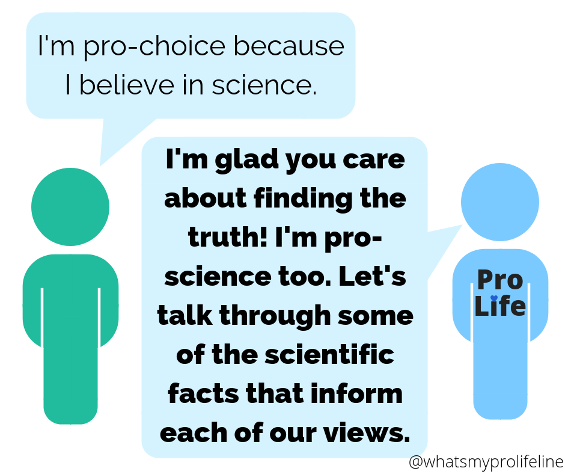

Scientific evidence conclusively shows that fertilization creates a new living human organism. This point is important, but keep in mind that it does not settle the abortion debate on its own. Many pro-choice people agree that biologically speaking, a fetus is a living human. Listen carefully to what your conversation partner says.